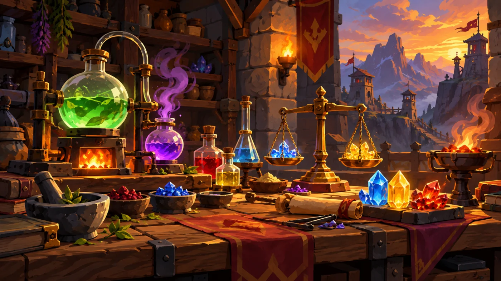
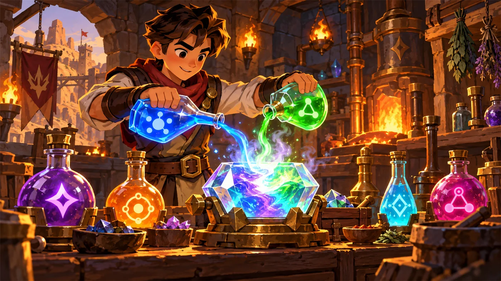
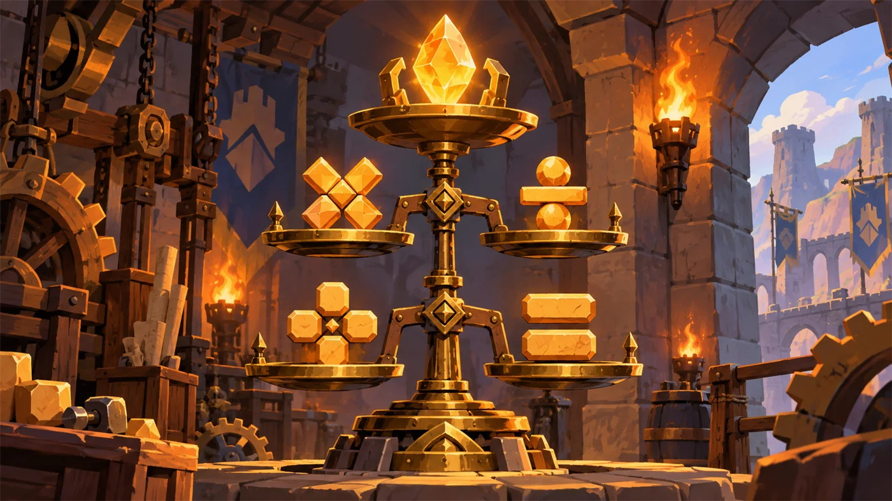
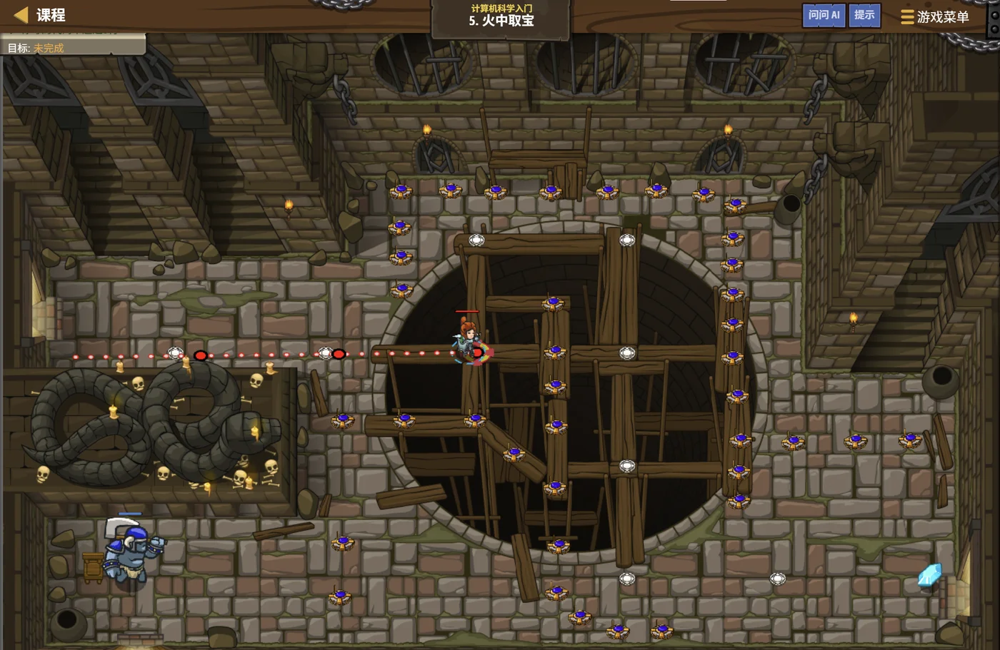

故事：地面像呼吸一样喷吐着火舌，火焰陷阱在等你犯错。更麻烦的是，宝石旁边还站着食人魔。
但你注意到一件事：这些陷阱对食人魔同样致命。如果能引诱它踏进火海，
你就能不战而胜——有时候，环境就是最好的武器。
扣哒考级 · GESP PYTHON 一级 · 第 3 单元 | 烛火岗哨 CANDLEWATCH OUTPOST
炼金配方台 运算符与表达式
Operators & Expressions

安雅
红发队长 · 你的旅伴
岗哨的地下室有一张长桌，桌上摆满了装着发光液体的瓶子，每只瓶身上都刻着一个符号：
+、-、*、/、%、**……
"这叫炼金配方台。"安雅拿起两只瓶子倒进一只水晶杯，杯里的液体立刻变了颜色， 把不同的东西按照符号配在一起，就会得到新东西——程序里的'运算'，就是这么回事。
"这叫炼金配方台。"安雅拿起两只瓶子倒进一只水晶杯，杯里的液体立刻变了颜色， 把不同的东西按照符号配在一起，就会得到新东西——程序里的'运算'，就是这么回事。
安雅 · 红发队长
这一单元我们会把三套符号全部过一遍：算术（算数）、
关系（比大小）、逻辑（判断真假）。
它们看着简单，但真题里的"算一算，输出是几"几乎全从这儿出。

assets/illustrations/py-L1-03-00_alchemy_bench.webp
【配图位】烛火岗哨的炼金小屋：石台上摊着发黄的配方纸，青铜天平、量杯与砝码一字排开，架上一排装着发光液体的药瓶按颜色排列；炉火把整个屋子映成暖橙色，一名学徒举着写满算式的纸片在药架前比对。
0 单元导语与目标
Unit Overview
1学完这个单元，你将能……
- 熟练使用六个算术运算符，说清
/、//、%的区别 - 背出运算符的优先级顺序，并正确计算混合表达式
- 用关系运算符比较大小，结果是 True 或 False
- 用
and / or / not组合出复杂条件 - 读懂并写出复合赋值（
+= -= *= //= %=） - 用
turtle画出简单的图形
2对标 GESP 考纲（Python 一级）
- （9）掌握比较运算符、算术运算符、逻辑运算符的基本概念及基础应用
- （12）掌握图形库 turtle 的主要功能，使用 turtle 进行绘图
- （13）掌握模块的导入方法
- 考核目标：掌握数据类型的使用与基础运算
零基础提示：运算符就是"做运算的符号"。数学里你早就会用
+ - × ÷，
程序里只是换了几种写法，并多了几个数学课上学不到的新符号（比如取余 %）。
1 算术运算符
Arithmetic Operators
1.1 六个基本运算符
图 2（SVG）：六个基本算术运算符，外加幂运算
| 运算符 | 名称 | 例子 | 结果 | 说明 |
|---|---|---|---|---|
+ | 加 | 3 + 2 | 5 | 字符串之间也能用，表示拼接 |
- | 减 | 3 - 2 | 1 | — |
* | 乘 | 3 * 2 | 6 | 字符串乘整数表示重复："ab" * 3 → ababab |
/ | 真除 | 7 / 2 | 3.5 | 结果一定是浮点数 |
// | 整除 | 7 // 2 | 3 | 只取整数部分，向下取整 |
% | 取余（模） | 7 % 2 | 1 | 取除完剩下的余数 |
** | 幂 | 2 ** 3 | 8 | 2 的 3 次方；注意不是 ^ |
重要提醒：Python 里乘方用
**，不是 ^。
^ 在 Python 里是另一种运算（异或，三级才学）。
另外，Python 里没有 × 和 ÷，乘除一律写 * 和 /。
1.2 除法三兄弟
这是每次考试都会出现的一组符号，务必分清楚。拿 7 ÷ 2 举例：
图 3（SVG）：
/、//、% 三兄弟的分工
三个都试一遍
Python
a = 8
b = 10
print(a / b) # 真除
print(a // b) # 整除
print(a % b) # 取余
print(b // a) # 换个大数除以小数
print(b % a) # 再来一次OUTPUT 0.8
0
8
1
2
0
8
1
2
看第 3、5 行：
8 % 10 得 8，10 % 8 得 2。
当被除数比除数还小时，取余的结果就是被除数本身（8 不够除 10，剩下 8）。这是真题爱考的小细节。
取余的三大用途（记住它，后面会反复遇到）：
① 判断能不能整除：
② 取一个数的个位：
③ 让数字循环：
① 判断能不能整除：
n % 2 == 0 说明 n 是偶数；② 取一个数的个位：
n % 10 就是个位数；③ 让数字循环：
i % 5 会得到 0,1,2,3,4,0,1,2,3,4……
1.3 运算符优先级
当一行里出现多种运算符时，谁先算？岗哨的炼金规矩是这样的（从高到低）：
图 4（SVG）：优先级金字塔
优先级实例
Python
print(2 + 3 * 4) # 先乘后加
print((2 + 3) * 4) # 括号优先
print(2 ** 3 * 2) # 先算幂，再乘
print(-2 ** 2) # 幂优先于负号！
print(10 - 4 / 2) # 先除后减OUTPUT 14
20
16
-4
8.0
20
16
-4
8.0
重点看第 4 行：
如果想表达 (-2) 的平方，必须写
这一点在真题里考过（第 4 题），务必记住。
-2 ** 2 的结果是 -4，不是 4！
因为幂运算的优先级高于一元负号：
先算 2 ** 2 = 4，再取负 → -4。如果想表达 (-2) 的平方，必须写
(-2) ** 2。这一点在真题里考过（第 4 题），务必记住。
安雅 · 红发队长
我们的补给官分宝石有个绝招——先分，再看剩几颗。7 颗宝石分给 3 个人，每人
7 // 3 = 2 颗，还剩 7 % 3 = 1 颗归队长。那颗"多出来的"就是余数。它不参与平分，但它永远存在——而且特别有用。
2 关系运算符
Comparison Operators
关系运算符用来"比大小"，它的结果只有两种：True（成立）或 False（不成立）。
| 运算符 | 含义 | 例子 | 结果 |
|---|---|---|---|
== | 等于 | 10 == 10 | True |
!= | 不等于 | 10 != 10 | False |
> | 大于 | 10 > 9 | True |
< | 小于 | 10 < 9 | False |
>= | 大于等于 | 10 >= 10 | True |
<= | 小于等于 | 10 <= 9 | False |
比一比
Python
print(10 > 9)
print(10 == 10)
print(3 != 3)
print(5 >= 8)
name = "安雅"
print(name == "安雅") # 字符串也能比较
print(name == "塔林")OUTPUT True
True
False
False
True
False
True
False
False
True
False
别混淆：
= 是赋值（装东西），== 是比较（问一样吗）。
这两个符号虽然只差一个等号，但含义完全不同。
阿玛拉 · 冷羽射手
我们射手判断能不能放箭，只问三件事：够不够近、是不是敌人、中间有没有挡箭的墙。写进代码就是一行：
distance < 30 and is_enemy and not has_wall。你看，一个
and 就把三个条件拧成了一股绳。
3 逻辑运算符
Logical Operators
有时候一个条件不够用，需要把几个条件"组合"起来。Python 提供三个逻辑运算符：
3.1 and 与 or
图 5（SVG）：and 与 or 的完整真值表
记忆口诀：
and（与）：一假则假，全真才真。
or（或）：一真则真，全假才假。
and（与）：一假则假，全真才真。
or（或）：一真则真，全假才假。
3.2 not 取反
not 把 True 变 False、False 变 True：
| 写法 | 结果 |
|---|---|
not True | False |
not False | True |
not (10 > 9) | False（因为 10 > 9 是 True） |
组合条件
Python
hp = 80
gold = 30
# 血量够 且 金币够，才买得起药
print(hp > 50 and gold > 20)
# 血量低 或 没金币，都该撤退
print(hp < 30 or gold == 0)
# 不在白天（即夜晚）
is_day = False
print(not is_day)OUTPUT True
False
True
False
True
3.3 逻辑运算的优先级
三个逻辑运算符之间的顺序是：not > and > or。
完整优先级（从高到低）：
记不住就先加小括号——加括号永远是对的，而且更清楚。
( ) → ** → 正负号 → * / // % → + - →
关系运算符（== > < 等）→ not → and → or。记不住就先加小括号——加括号永远是对的，而且更清楚。
优先级实例
Python
print(True or False and False) # 先算 and
print((True or False) and False) # 括号优先
print(not True and False) # 先算 not
print(3 + 4 > 6 and 2 * 2 == 4) # 先算数，再比较，最后 andOUTPUT True
False
False
True
False
False
True
4 复合赋值运算符
Compound Assignment
在第 2 单元你已经见过 += 和 -=。其实算术运算符都能这么简写：
| 简写 | 完整写法 | 例子（a 初始为 10） | 运算后 a 的值 |
|---|---|---|---|
a += 5 | a = a + 5 | 10 + 5 | 15 |
a -= 5 | a = a - 5 | 10 - 5 | 5 |
a *= 3 | a = a * 3 | 10 * 3 | 30 |
a /= 4 | a = a / 4 | 10 / 4 | 2.5 |
a //= 3 | a = a // 3 | 10 // 3 | 3 |
a %= 3 | a = a % 3 | 10 % 3 | 1 |
a **= 2 | a = a ** 2 | 10 ** 2 | 100 |
复合赋值实战
Python
gold = 100
gold += 50 # 捡到 50 金币
print(gold)
gold -= 30 # 花掉 30
print(gold)
gold *= 2 # 翻倍奖励
print(gold)OUTPUT 150
120
240
120
240
5 拓展：turtle 海龟绘图
Turtle Graphics
考纲一级要求"掌握图形库 turtle 的主要功能"。想象岗哨广场上趴着一只机械海龟， 你给它下命令"前进 100 步""左转 90 度"，它就会一边爬一边留下痕迹，最后画出一个图形。
要使用 turtle，第一步是导入模块：
第一个海龟程序
Python
import turtle # 导入海龟绘图模块
turtle.forward(100) # 向前爬 100
turtle.right(90) # 右转 90 度
turtle.forward(100) # 再向前爬 100
turtle.done() # 结束绘图，保持窗口不关闭效果 画出一个"直角"，像骰子上的 L 形
| 指令 | 作用 | 说明 |
|---|---|---|
import turtle | 导入模块 | 不导入就用不了任何海龟指令 |
forward(d) / fd(d) | 前进 d 步 | 一边走一边画线 |
backward(d) | 后退 d 步 | 同样会画线 |
right(角度) | 右转 | 只转向，不移动 |
left(角度) | 左转 | 只转向，不移动 |
goto(x, y) | 移动到坐标 (x, y) | 移动过程中会画线 |
home() | 回到原点 (0,0) | 也会画线 |
penup() / pu() | 抬笔 | 之后移动不再留下痕迹 |
pendown() / pd() | 落笔 | 恢复"边走边画" |
turtle.done() | 结束绘图 | 写在最后，防止窗口闪退 |
起点与朝向：海龟默认从画布中心出发，
初始朝右（0 度）。
right(90) 是顺时针转，left(90) 是逆时针转。
注意 right(90) 与 left(-90) 效果完全相同（真题考过）。
用循环画一个正方形
Python
import turtle
for i in range(4): # 重复 4 次（循环下个单元细讲）
turtle.forward(100)
turtle.right(90)
turtle.done()效果 画出一个边长为 100 的正方形

assets/illustrations/py-L1-03-01_alchemy_table.webp
【配图位】岗哨地下室的炼金台：桌上摆满发光的药剂瓶，每只瓶身刻着一个运算符符号；一名新兵把两瓶药剂倒进中央的结果水晶杯，杯内液体变色并冒出星点；暖橙色火光与青色药液对比。

assets/illustrations/py-L1-03-02_precedence_scales.webp
【配图位】一架三层黄铜天平：顶层放着幂运算的砝码，中层放着乘除与取余，底层放着加减；每层砝码发光，天平整体矗立在岗哨的炼金台旁。
6 代码实战
Level Practice
关卡
火中取宝
进入关卡 →
assets/stages/py-L1-03-stage1_fire_treasure.webp
【关卡截图位】请把《火中取宝》的游戏画面截图放到此处（放入 assets/stages/ 目录，文件名为 py-L1-03-stage1_fire_treasure.webp）。
思路：看上面的关卡实况——火焰陷阱遍地，但存在一条安全路径。 这一关考的是"用最少的代码，走最聪明的路"：数一数哪一段是连续的直线， 就把它合成一条指令——而括号里那个数字，正是本单元的主角：数值。
重点示例：把好几步合成一步
Python
hero.moveRight(3) # 一次向右走 3 格
hero.moveUp() # 向上走 1 格；不填数字就是默认的 1
hero.moveDown(3) # 一次向下走 3 格就这个套路 把路线拆成几段直线，每段合成一条指令；剩下两段的写法完全一样，留给你自己补
和运算符接上了：括号里不一定只能写一个数——
你完全可以写
记住这句话：程序里凡是要"算一算"的地方，都归运算符管。
hero.moveRight(2 + 1)。
Python 会先算出 3，再把 3 交给方法。记住这句话：程序里凡是要"算一算"的地方，都归运算符管。
省代码也是一种本事：把
去扣哒世界闯这一关 →
moveRight() 连写三遍，
和 moveRight(3) 写一遍，效果完全一样，但后者少写两行。
程序员管这叫"代码优化"——用更少的字，办同样的事。
7 常见陷阱
Common Pitfalls & Debugging

扣哒鸭 · 调试官
运算符这章的错误，一半来自"想当然"，一半来自"记混了符号"。
下面五个，是我见你犯得最多的。
1
把
// 当成注释。以为 a = 7 // 2 后面一段会被忽略。
扣哒鸭：
// 是整除，不是注释。
Python 的注释是 #（一个井号）。你把整数除法的符号当成了注释符，
难怪结果对不上。正确写法：
7 // 2 → 3；注释用 # 这里是注释2
乘方写成了
^。写 2 ^ 3 想要 8，结果得到 1。
扣哒鸭：
^ 在 Python 里不是乘方，是"按位异或"，三级才学。
乘方要用两个星号：2 ** 3。少一个星号，意思全变。正确写法：
2 ** 3 → 83
以为
/ 的结果一定是整数。算 10 / 2 得到 5.0 而不是 5。
扣哒鸭：在 Python 3 里，真除
/ 的结果永远是浮点数，
能整除也会带小数点。想要整数结果，用 // 或者 int() 套一层。正确写法：
10 // 2 → 5；int(10 / 2) → 54
搞错
-2 ** 2 的结果。以为是 4，实际是 -4。
扣哒鸭：幂运算比负号优先级高：
-2 ** 2 先算 2 ** 2 = 4，再取负得 -4。
想要 (-2) 的平方，必须写 (-2) ** 2。这个点在真题里出现不止一次。正确写法：想算平方就加括号：
(-2) ** 2 → 45
把
= 用在条件里。写 if a = 5:，程序直接报语法错误。
扣哒鸭：判断相等要写两个等号
==；
一个等号是"装东西"，不能用在条件里。你写 if a = 5，
等于在说'把 5 装进 a，然后判断它'——计算机当然不干。正确写法：
if a == 5:8 题目练习
Practice
下面 7 道题中，前 3 道改编自 GESP 真题，后 4 道为原创练习题。
改编自 2026 年 9 月 · Python 一级 · 第 4 题单选题
下列 Python 表达式与
2 * -2 ** 4 的值相同的是（ ）。
A.(2 * -2) ** 4
B.2 * (-2) ** 4
C.2 * -(2 ** 4)
D.-(2 * 2) ** 4
B.2 * (-2) ** 4
C.2 * -(2 ** 4)
D.-(2 * 2) ** 4
查看答案与详解
答案：C。幂运算
C 项
B 项
对应小节1.3 运算符优先级。
** 的优先级高于一元负号，
所以 -2 ** 4 先算 2**4 = 16，再取负得 -16；整个表达式是 2 × (-16) = -32。C 项
2 * -(2 ** 4) = 2 × (-16) = -32，与之相同；B 项
2 * (-2) ** 4 = 2 × 16 = 32，是把负号"提前"了，最容易被误选。对应小节1.3 运算符优先级。
改编自 2026 年 9 月 · Python 一级 · 第 6 题单选题
下列 Python 代码执行后，其输出是（ ）。
1 a = 8 2 b = 10 3 print(a % b, a / b, a // b )
A.8 0.8 0 B.0 0.8 0 C.8 0 0.8 D.0 0 0.8
查看答案与详解
答案：A。
对应小节1.2 除法三兄弟。
a % b 取余 → 8 % 10 = 8（8 不够除 10，余数就是它自己）；a / b 真除 → 8 / 10 = 0.8；a // b 整除 → 8 // 10 = 0。对应小节1.2 除法三兄弟。
改编自 2026 年 9 月 · Python 一级 · 判断题第 9 题判断题
在 Python turtle 中，
turtle.right(90) 与 turtle.left(-90) 的效果相同。（ ）查看答案与详解
答案：正确（√）。right(90) 是右转 90 度；left(-90) 是左转 -90 度，也就是右转 90 度。
两者朝向变化完全一致。
引申：left 与 right 互为逆运算，"负角度"的写法常用来考转角的等价性。
对应小节5 turtle 海龟绘图。
引申：left 与 right 互为逆运算，"负角度"的写法常用来考转角的等价性。
对应小节5 turtle 海龟绘图。
原创练习题单选题
下列 Python 代码执行后，输出的结果是（ ）。
1 a = 17 2 b = 5 3 print(a // b + a % b)
A.3 B.5 C.7 D.22
查看答案与详解
答案：B。先算
记住这个组合：
对应小节1.2 除法三兄弟。
a // b = 17 // 5 = 3；
再算 a % b = 17 % 5 = 2；3 + 2 = 5。记住这个组合：
// 和 % 一起用，可以拆出一个数的"商"与"余数"——
这是后面做题的常用套路。对应小节1.2 除法三兄弟。
原创练习题单选题
下列 Python 代码执行后，输出的结果是（ ）。
1 print(10 - 2 ** 3 // 4 + 1)
A.7 B.9 C.11 D.3
查看答案与详解
答案：B。按优先级逐步算：
① 先算幂：
② 再算整除：
③ 最后从左往右算加减：
易错点：加减属于同级运算，必须从左往右依次算。 若先算
对应小节1.3 运算符优先级。
① 先算幂：
2 ** 3 = 8② 再算整除：
8 // 4 = 2③ 最后从左往右算加减：
10 - 2 + 1 = 9易错点：加减属于同级运算，必须从左往右依次算。 若先算
2 + 1 = 3 再去减，会得到 7，那就错了。对应小节1.3 运算符优先级。
原创练习题判断题
表达式
True or False and False 的结果是 True。（ ）查看答案与详解
答案：正确（√）。
易错点：如果误以为从左往右算，会先算
对应小节3.3 逻辑运算的优先级。
and 的优先级高于 or，
所以先算 False and False = False；
再算 True or False = True。易错点：如果误以为从左往右算，会先算
True or False = True，
再算 True and False = False，那就错了。对应小节3.3 逻辑运算的优先级。
原创练习题编程题
题目要求：设 a = 123，用运算符分别求出它的个位数、十位数与百位数，并分行输出。
查看参考答案与要点
a = 123 print(a % 10) # 个位：取余 10 print(a // 10 % 10) # 十位：先整除 10 砍掉个位，再取余 10 print(a // 100) # 百位：整除 100 直接砍掉后两位
输出：3 2 1
要点：
① 取个位用 % 10；
② 取中间位要"先砍后取"：a // 10 % 10；
③ 取最高位（已知三位数）可以直接 // 100。
对应小节1.2 除法三兄弟。
9 本单元小结
Unit Summary

贺舒曼 · 镜中先知
运算符是程序的"动词"。你们今天学的三套符号——
算术算子负责算数，关系算子负责比较，逻辑算子负责组合条件——
往后无论写多复杂的程序，都只是在反复调用这三套东西。我只提醒一句：优先级记不住就加括号。括号不花钱，但能省下你半小时的调试时间。
你在炼金台前收获了什么
- 算术运算符——
+ - * / // % **；除法三兄弟各司其职。 - 取余的用途——判断奇偶、取个位、让数字循环。
- 优先级——括号 → 幂 → 乘除取余 → 加减 → 比较 → not → and → or；
-2 ** 2等于 -4。 - 关系运算符——
== != > < >= <=，结果只有 True / False。 - 逻辑运算符——
and全真才真、or一真则真、not取反。 - 复合赋值——
+= -= *= /= //= %= **=。 - turtle 绘图——导入模块、前进后退、左右转向、抬笔落笔、
goto与home。